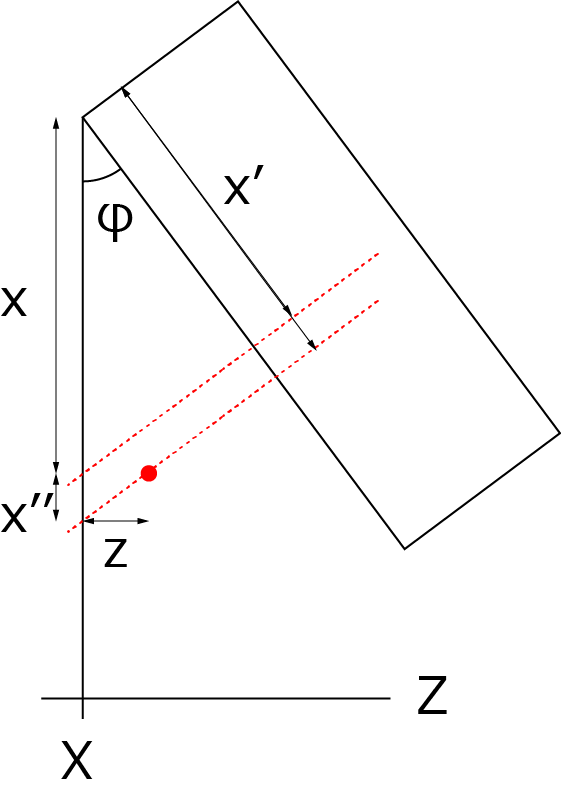

斜め上から波形を描画する方法-06
XY平面（ Z方向にオフセットがある場合）
XY面を考えます（真上から見た様子）．

Z方向が０でない場合，ｘ’’だけｘの値が大きくなるので，
\(\Large x'' = z \ tan \varphi \)
となります．従って，
\(\Large \begin{eqnarray} x' &=& (x + z tan \varphi) cos \varphi \\
&=& x cos \varphi + z sin \varphi \\
\end{eqnarray} \)
となります．